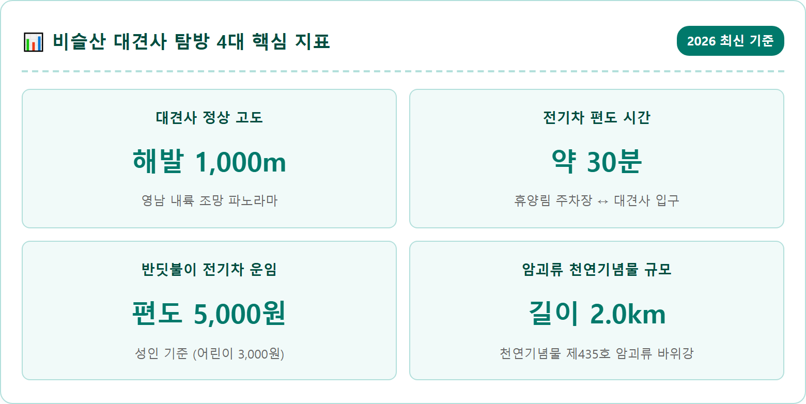
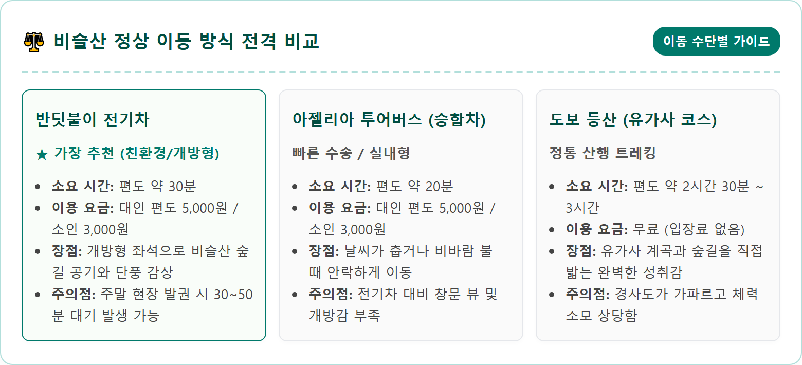
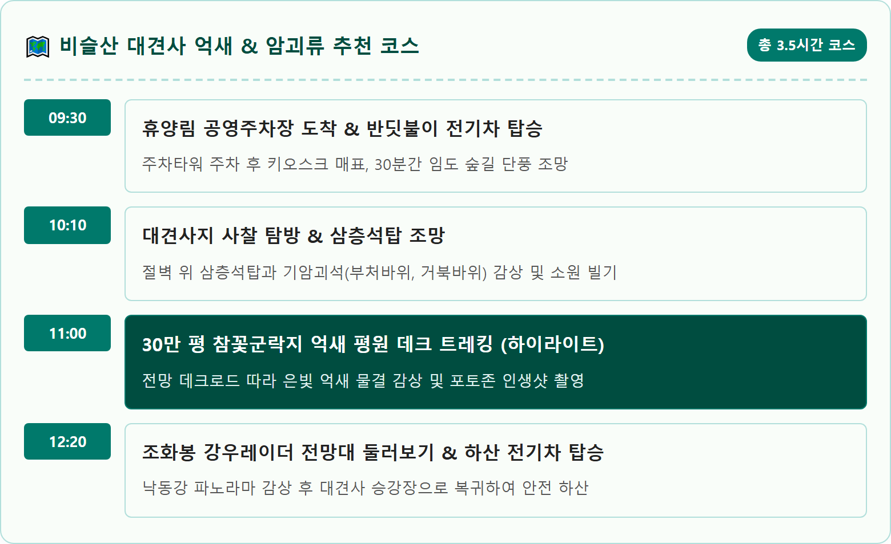
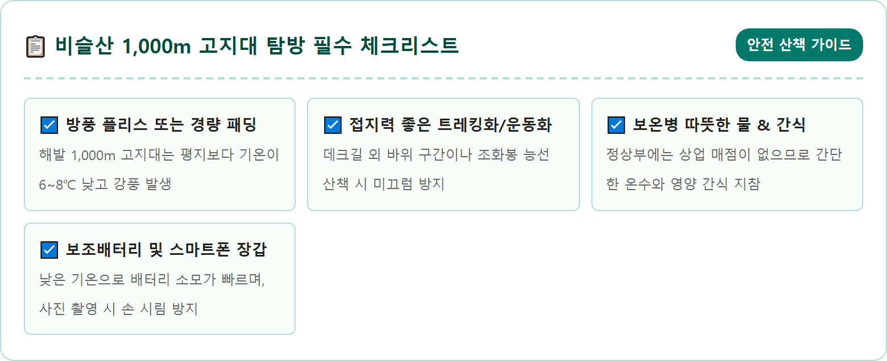
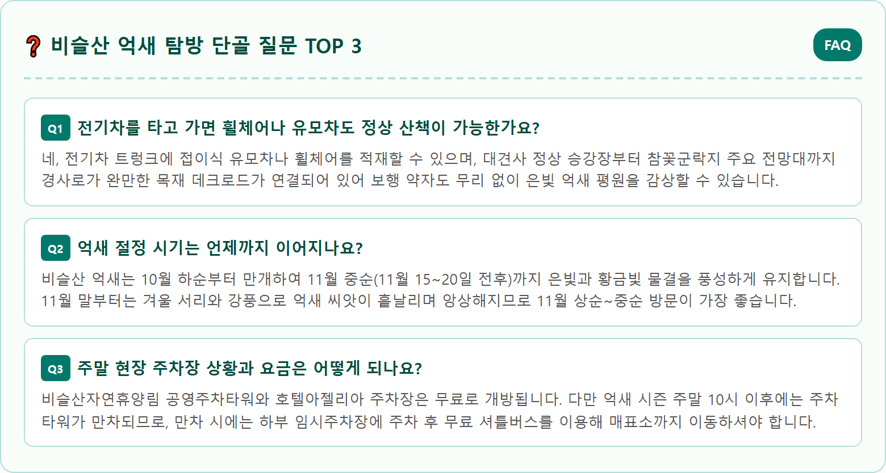

A breathtaking panoramic landscape of Mount Biseulsan Daegyeonsa temple peak in Daegu, South Korea during late autumn. Vast plateau covered with a shimmering ocean of golden and silver pampas grass (eoksae) swaying gracefully under the warm late afternoon golden hour sunlight. In the foreground, the ancient stone pagoda of Daegyeonsa Temple stands majestically on the cliff edge. Surrounding the ridge are dramatic granite blockstreams (blockfield) of ancient mossy boulders. Soft mountain ridges stretch into the misty horizon under a clear deep blue sky. Hyper-realistic, 8k resolution, cinematic landscape photography, ultra high detail, authentic Korean autumn scenery.

대구광역시 달성군 유가읍과 옥포읍, 가창면에 걸쳐 웅장하게 솟아 있는 비슬산(琵瑟山, 해발 1,084m)은 사계절 내내 각기 다른 신비로운 비경을 토해내는 영남의 명산입니다. 봄철이면 산정 전체가 붉은 진달래로 타오르는 참꽃 군락지로 전국적인 명성을 떨치지만, 늦가을 11월에 마주하는 비슬산은 완전히 다른 얼굴로 탐방객을 맞이합니다. 바로 30만 평에 달하는 완만한 고산 고원 전체가 은빛과 황금빛 억새 바다로 물결치는 장엄한 은빛 평원으로 변신하기 때문입니다.
비슬산 억새의 최대 장점은 해발 1,000m가 넘는 고산 지대에 위치해 있음에도 불구하고, 도심 근교에서 대중교통과 친환경 전기차를 이용해 누구나 손쉽게 오를 수 있다는 독보적인 접근성에 있습니다. 험준한 바위산을 4~5시간씩 땀 흘려 오르지 않아도, 쾌적한 셔틀 차량에 몸을 싣고 해발 1,000m 정상 턱밑까지 단숨에 이동할 수 있어 어린 자녀를 동반한 가족 나들이객이나 연로하신 부모님을 모신 여행객에게도 완벽한 늦가을 산책 코스를 제공합니다.
바람이 스칠 때마다 사각사각 소리를 내며 흔들리는 수억만 포기의 억새꽃은 파란 가을 하늘과 어우러져 한 폭의 유채화 같은 풍경을 빚어냅니다. 특히 오후 3시를 넘어서며 서쪽 낙동강 너머로 기우는 황금빛 햇살이 역광으로 억새 이삭을 비출 때면, 온 능선이 보석을 뿌려놓은 듯 눈부시게 반짝이며 숨 막히는 감동을 안겨줍니다.

비슬산 여행의 시작점이자 핵심 교통수단은 바로 달성군시설관리공단에서 운영하는 '비슬산 반딧불이 전기차'입니다. 비슬산 자연휴양림 입구에 위치한 공영 주차타워(호텔아젤리아 인근)에서 출발하여 해발 1,000m의 대견사 버스정류장까지 약 5.8km의 포장 임도를 오르내립니다.
전기차는 귀여운 반딧불이 캐릭터 디자인을 입힌 개방형 저속 전기 셔틀버스로, 시속 약 15~20km의 완만한 속도로 운행됩니다. 창문이 트여 있어 올라가는 내내 지저귀는 새소리와 청량한 가을 솔바람, 알록달록 물든 단풍나무 숲길의 정취를 온몸으로 만끽할 수 있습니다. 경사가 급한 구간에서도 모터의 부드러운 힘으로 안정감 있게 운행되므로 승차감이 대단히 우수합니다.
운영 시간은 평일 오전 9시부터 오후 5시까지, 주말 및 성수기에는 오전 8시 40분부터 수시 배차로 탄력 운행됩니다. 요금은 성인 기준 편도 5,000원, 청소년 4,000원, 어린이 3,000원이며 왕복권도 발권 가능합니다. 현장 무인 발권기(키오스크)를 통해 당일 표를 예매할 수 있는데, 단풍과 억새 절정기 주말에는 오전 10시 이후 대기 시간이 1시간 이상 길어질 수 있으므로 주말 방문 시에는 오전 9시 이전 도착을 적극 권장합니다.
전기차를 타고 오르다 보면 차창 밖 계곡 쪽으로 입이 떡 벌어지는 진귀한 풍경이 시선을 압도합니다. 거대한 화강암 바위 수만 개가 마치 강물이 흘러내리듯 산비탈을 타고 쏟아져 내려오는 형상의 '비슬산 암괴류(岩塊流)'입니다. 2003년 천연기념물 제435호로 지정된 이 돌강은 길이 약 2km, 너비 80m, 두께 5m에 달하며, 단일 암괴류 규모로는 세계 최고 수준을 자랑하는 지형학적 보물입니다.
비슬산 암괴류는 약 1만~10만 년 전 마지막 빙하기(후기 플라이스토세) 시절, 얼어붙었다 녹기를 반복하는 극한의 주빙하 기후 속에서 거대한 화강암 절벽이 동결 파쇄 작용을 거쳐 형성되었습니다. 모난 바위들이 모서리가 둥글게 깎이면서 완만한 경사면을 따라 중력에 의해 서서히 미끄러져 내려와 지금의 거대한 암석 바다를 이룬 것입니다.
전기차에서 내려 암괴류 관찰 데크로드에 서면, 바위 틈새 아래로 지하수가 흐르는 청량한 물소리가 들려옵니다. 가을철이면 회백색 거대 암석들 사이로 붉은 단풍잎들이 떨어져 앉아 기괴하면서도 신비로운 비경을 연출합니다. 억새 평원으로 올라가기 전, 자연이 수만 년에 걸쳐 조각해 낸 거대한 지질학의 전시장 앞에서 기념사진을 남겨보시기 바랍니다.

전기차 상부 승강장에 내려 완만한 나무 데크길을 5분 정도 걸어 들어가면, 해발 1,000m 험준한 바위 절벽 벼랑 끝에 거짓말처럼 자리 잡은 고찰 '대견사(大見寺)'를 마주하게 됩니다. 신라 흥덕왕 때 창건된 것으로 전해지는 대견사는 일연 스님이 20대 청년 시절 주지로 머물며 삼국유사 집필의 구상을 다듬었던 유서 깊은 호국 도량입니다. 일제강점기 강제 폐사되는 비운을 겪었으나, 2014년 달성군의 복원 불사로 100여 년 만에 웅장한 가람을 되찾았습니다.
대견사에서 가장 경이로운 랜드마크는 절벽 끝 바위 암반 위에 위태롭게 서 있는 '대견사지 삼층석탑(대구광역시 유형문화재 제42호)'입니다. 벼랑 아래로 아득하게 펼쳐지는 달성군 유가읍 벌판과 굽이쳐 흐르는 낙동강 물줄기, 그리고 멀리 고령과 창녕의 첩첩산중을 굽어보고 있는 이 석탑은 그 자체로 한 폭의 불교 회화입니다. 석탑 뒤편으로 늦가을 은빛 억새가 바람에 흩날릴 때 석탑을 앵글에 담으면, 종교적 경건함과 늦가을의 정취가 극적으로 교차합니다.
사찰 주변 암벽에는 기기묘묘한 형상의 기암괴석들이 늘어서 있습니다. 부처의 형상을 닮은 부처바위, 바다를 향해 기어가는 듯한 거북바위, 소원을 빌면 아들을 낳는다는 백곰바위와 층층바위 등 안내 팻말을 따라 바위 이름을 하나씩 찾아보는 것도 대견사 탐방의 색다른 재미입니다. 경내 약수터에서 흘러나오는 시원한 감로수로 목을 축이며 잠시 마음의 평안을 찾아보시기 바랍니다.
대견사 대웅전 뒤편으로 이어지는 계단을 오르면 비슬산의 진면목인 '참꽃군락지 억새 평원'이 시야 가득 펼쳐집니다. 축구장 수십 개를 합쳐놓은 듯 광활한 약 30만 평의 완만한 고원 분지가 온통 새하얗고 은은한 황금빛 억새꽃으로 가득 차 있어 보는 이의 탄성을 자아냅니다.
비슬산 고위평탄면에 조성된 이 군락지는 사방으로 거미줄처럼 목재 데크로드가 촘촘하게 개설되어 있어, 흙을 밟거나 등산화가 훼손될 염려 없이 쾌적하게 산책을 즐길 수 있습니다. 데크 산책로 중간중간에는 넓은 전망 쉼터와 벤치, 액자 포토존이 마련되어 있어 걸음을 멈추고 억새 바다를 배경으로 추억을 남기기에 최적입니다.
늦가을 11월의 억새는 10월 초순의 은회색 솜털에서 벗어나 햇볕에 잘 마른 베이지색과 옅은 갈색, 황금빛 깃털로 무르익어 더욱 풍성하고 따뜻한 질감을 뽐냅니다. 바람이 산마루를 넘어 불어올 때마다 억새 군락 전체가 파도처럼 일렁이며 일제히 한 방향으로 고개를 숙이는 모습은 도심의 번잡함을 일순간에 씻어내는 자연의 경이로운 군무입니다.

대견사 참꽃군락지 억새 평원을 한 바퀴 둘러보는 것만으로도 충분히 아름답지만, 조금 더 체력에 여유가 있는 탐방객이라면 인근 조화봉(해발 1,058m)이나 비슬산 최고봉인 천왕봉(해발 1,084m)으로 트레킹을 연계하는 코스를 추천합니다.
대견사에서 남쪽 능선을 따라 완만한 바윗길을 15분 정도 걸으면 만나는 조화봉 정상에는 축구공 모양의 독특한 비슬산 강우레이더 관측소가 자리 잡고 있습니다. 레이더 관측소 옥상에는 누구나 무료로 이용할 수 있는 전망 데크가 설치되어 있어, 맑은 날에는 대구 시가지는 물론 합천 가야산과 창녕 화왕산 능선까지 360도 파노라마 조망을 거침없이 품어낼 수 있습니다.
반대로 대견사에서 북쪽 능선을 따라 천왕봉으로 향하는 코스는 편도 약 4.2km로, 능선길을 따라 1시간 30분에서 2시간 정도 소요됩니다. 고도차가 크지 않은 완만한 능선길이 이어지며 능선 좌우로 끝없이 이어지는 억새 숲을 온전히 가로지르게 됩니다. 단, 천왕봉 왕복 시에는 하산 전기차 막차 시간(오후 4시 30분~5시경)을 반드시 계산에 넣어야 하며, 시간이 부족하다면 대견사와 조화봉 코스까지만 탐방하는 것이 안전합니다.
비슬산 대견사 억새를 가장 환상적으로 만날 수 있는 비결은 바로 '방문 시간대'의 선택에 있습니다. 일교차가 10℃ 이상 벌어지는 늦가을 아침 일찍(오전 9시 전후) 전기차 첫 차를 타고 정상에 오르면, 발아래 낙동강 유역에서 피어오른 몽환적인 운해(雲海)가 산자락을 가득 메우고 그 위로 은빛 억새가 섬처럼 솟아오르는 신선놀음 같은 풍경을 감상할 수 있습니다.
반면 가장 로맨틱한 사진을 남기고 싶다면 오후 2시 30분 이후의 방문을 적극 권장합니다. 오후 3시부터 4시 30분 사이의 이른바 '골든아워'에는 기울어진 태양 광선이 억새 줄기를 관통하며 은빛 억새를 눈부신 샴페인 골드빛으로 물들입니다. 이때 카메라 렌즈를 역광 구도로 잡고 대견사 삼층석탑이나 인물의 실루엣을 담으면 전문가 수준의 감성 프로필 사진이 탄생합니다.
주의할 점은 11월 산간 지대의 일몰은 평지보다 30분 이상 빠르며, 해가 서산 너머로 숨는 순간 기온이 급격하게 곤두박질친다는 사실입니다. 오후 4시 30분이 지나면 칼바람이 불어오므로 노을을 감상하시더라도 오후 4시 40분 이전에는 반드시 대견사 하산 셔틀 승강장으로 이동해 줄을 서셔야 합니다.

자가용을 이용해 비슬산을 찾으실 때 내비게이션 목적지는 '비슬산자연휴양림 공영주차장' 또는 '호텔아젤리아'로 설정하시는 것이 가장 정확합니다. 전기차 매표소 바로 앞에 대규모 주차타워(3층 규모)가 건립되어 있어 평일에는 매우 쾌적하게 주차가 가능하며 주차 요금은 전액 무료입니다.
하지만 가을 주말과 공휴일에는 대구 시내는 물론 부산, 창원, 구미 등 인근 영남권에서 몰려드는 나들이 차량으로 인해 오전 10시부터 휴양림 진입로가 극심한 정체를 빚습니다. 주차타워가 만차될 경우 교통경찰과 안내요원이 하부의 '유가읍 비슬산 공영주차장(테크노폴리스 외곽)'으로 차량을 우회시키며, 이곳에서 상부 매표소까지 무료 셔틀버스를 타고 이동해야 하므로 최소 30분 이상의 시간이 추가 소요됩니다.
따라서 주말 방문객은 무조건 아침 9시 이전에 주차타워에 입차하시는 것을 추천합니다. 아침 일찍 도착하면 주차타워 명당자리에 여유롭게 차를 대고, 대기 없이 오전 첫 전기차를 타고 올라가 한적한 은빛 억새 평원을 온전히 독점하는 특권을 누릴 수 있습니다.
비슬산 대견사에서 시원한 가을바람을 맞으며 억새 힐링을 마쳤다면, 산자락 아래 달성군의 풍성한 먹거리와 연계 관광지로 발걸음을 옮겨 여행의 대미를 장식해 보시기 바랍니다.
비슬산에서 차량으로 약 15분 거리인 현풍읍에는 100년 역사를 자랑하는 '현풍 백년도깨비시장'이 자리 잡고 있습니다. 5일과 10일에 서는 전통 오일장이 열릴 때면 활기가 넘치며, 시장 상설 골목에 위치한 곰탕 골목은 수십 년 전통의 진한 사골 육수로 전국 미식가들의 입맛을 사로잡는 곳입니다. 뜨끈하고 뽀얀 소머리곰탕 한 그릇에 깍두기를 얹어 들이켜면, 고산 산행으로 얼어붙었던 몸과 마음이 한순간에 녹아내립니다.
식사 후에는 옥포읍에 위치한 '옥연지 송해공원'을 산책해 보시길 권합니다. 달성군의 명예군민이었던 故 송해 선생을 기려 조성된 수변공원으로, 옥연지 둘레를 따라 걷는 3.5km의 옥연지 둘레길과 물 위에 떠 있는 백세교, 밤이면 화려한 조명을 뽐내는 음악분수가 가을밤의 운치를 더해줍니다. 해질녘 송해공원 수변 데크길을 거닐며 가을 하루를 완벽하게 마무리해 보시기 바랍니다.
| 구분 | 상세 정보 | 이용 팁 |
|---|---|---|
| 위치 | 대구광역시 달성군 유가읍 일연선사길 99 (비슬산자연휴양림) | 내비게이션: 비슬산공영주차타워 또는 호텔아젤리아 검색 |
| 전기차 운행 | 09:00 ~ 17:00 (주말 08:40부터 수시 탄력 배차) | 편도 약 30분 소요 / 정상 매표소 왕복권 발권 가능 |
| 이용 요금 | 전기차 편도: 대인 5,000원 / 청소년 4,000원 / 어린이 3,000원 | 비슬산 입장료 및 주차장 이용료 전액 무료 |
| 억새 절정기 | 매년 10월 하순 ~ 11월 중순 (가을 골든아워 추천) | 오후 3~4시 역광 황금빛 억새 촬영 최적 |